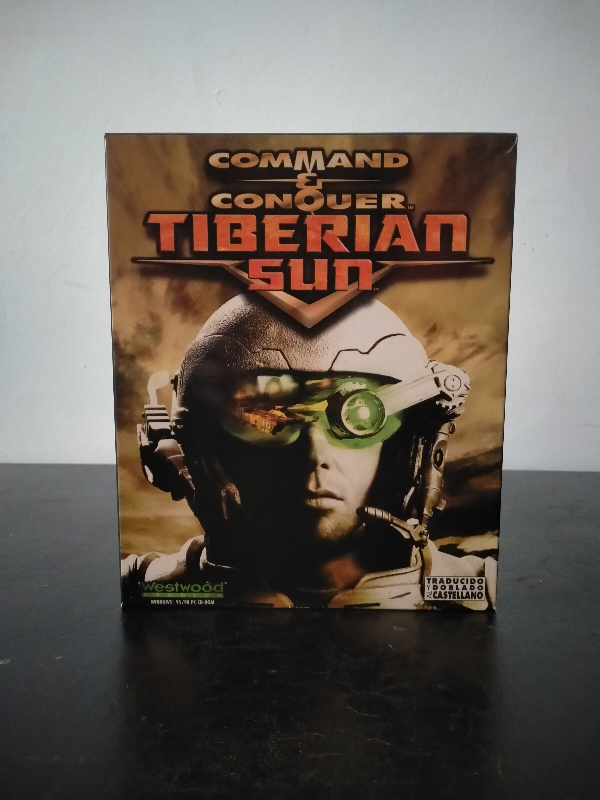

Ficha #000062
Command & Conquer: Tiberian Sun
Command & Conquer: Tiberian Sun es la secuela directa del influyente Command & Conquer original y uno de los títulos de estrategia en tiempo real más representativos de finales de los años noventa. Desarrollado por Westwood Studios, el juego sitúa el conflicto entre GDI y Nod en un futuro devastado por la expansión del Tiberium, incorporando campañas cinematográficas con actores reales, un motor gráfico renovado con escenarios isométricos detallados y nuevas mecánicas tácticas como unidades subterráneas, terrenos dinámicos y efectos ambientales. Esta edición española para PC incluye traducción y doblaje al castellano, una característica destacada en el mercado nacional de la época. Tiberian Sun tuvo una gran relevancia tecnológica y comercial dentro del género RTS, consolidando la saga Command & Conquer durante la transición entre la era Windows 95 y Windows 98.
- Formato
- Big Box
- Plataforma
- Win95 Win98
- Género
- Estrategia en tiempo real Ciencia ficción Estrategia militar
- Serie
- Todos Big Box
- Desarrollador
- Westwood Studios
- Distribuidor
- Electronic Arts, Westwood Studios
- EAN
- —
Contenido de la edición
- Caja Big Box
- Manual
- Guía de referencia
- CD-ROM
Preservación
- Protección
- SafeDisc
- Formato recomendado
- BIN/CUE
- Jugable en virtualización
- Sí
La preservación óptima de esta edición se realiza mediante imágenes BIN/CUE o CCD/IMG/SUB para conservar correctamente la estructura del disco y la protección SafeDisc. En sistemas modernos puede requerir parches no oficiales o ejecutables actualizados debido a incompatibilidades de SafeDisc con versiones recientes de Windows.